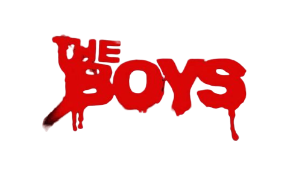

A 4ª temporada chegará em 2024
"The Boys" é uma série que se passa em um mundo onde super-heróis, chamados Os Sete, são celebridades corporativas que frequentemente abusam de seus poderes. O enredo gira em torno de um grupo de pessoas comuns conhecido como "The Boys", liderado por Billy Butcher, que está determinado a expor a verdade por trás dos super-heróis corruptos. Ao confrontar Os Sete e a poderosa corporação Vought International, a série aborda temas como corrupção, abuso de poder e a influência das corporações na sociedade, oferecendo uma mistura única de humor negro, ação intensa e críticas sociais. Clique e assista o trailer da 4° temporada a seguir:
X